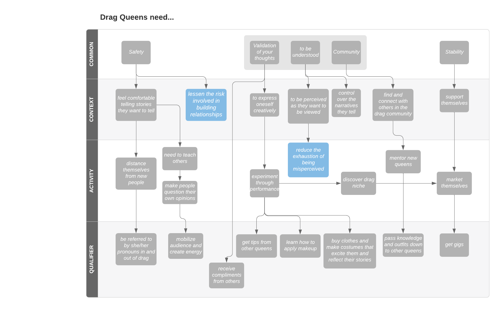

Drag is increasingly breaking into the mainstream, with Rupaul’s Drag Race becoming popular fare and the most famous queens reaching stardom. Despite this growing recognition, I’ve anecdotally noticed that queens are viewed one-dimensionally - as eccentric, and perhaps crazy, people.
What I found deconstructed our outsider assumptions of drag queens. The stories I heard about each queen’s childhood, process of getting into drag, approach to drag performance, and life out of drag led me to understandings of how queens use drag to decrease vulnerability and deal with misperception.
In order to fully understand the context around drag, I conducted one three-hour interview with a queen getting into drag, in-depth interviews with four queens at varying points in their drag careers, smaller conversations with 10 queens before and after their performances, and 12 conversations with drag show attendees.
To experience drag, we conducted one isolated drag experiment — getting into a drag look and showing the look to friends within the dorm — as well as one full drag immersion. For this immersion, we attended a drag performance at a San Francisco club in drag, talking with the queens backstage, initiating conversations with 10-15 strangers with our drag personas, and dancing.
Makeup station of drag queen who invited us to view her in the process of getting into drag
A few salient stories I heard during the interview process were...
I corroborated the stories of queens and our personal experiences doing drag into two findings and the insights that followed.
Based on my insights, I developed a hierarchy that illuminates relationships across important needs.
1. Queens are constantly being misperceived. They use drag to reduce the exhaustion of being misperceived. However, most of the time, queens are out of drag, pointing to an interesting solution space. Queens may need to redirect misperceptions away from themselves while out of drag. Alternatively, queens may need to cope with misperception inherent in social interaction.
2. Queens use female pronouns to lessen the risk involved in building relationships. Queens may need to feel prepared to lose or strain a relationship. Alternatively, queens may need to be certain that the people they look to build relationships with don’t have values that are irreconcilable with their own.
This design work was physically and mentally exhausting. While I struggled with challenging concepts of gender, identity, and perception, I believe we did the work to accurately represent how drag queens experience the world.
If I were to continue this line of work, I would...
1. Expand on our exploration of queens’ identity out-of-drag; particularly those that have been in the business for a long time or for those who drag is their full-time job.
a. Further exploration of misperception out-of-drag. The stories we heard noted that misperception was a central part of many queens’ formative years. If there are queens that didn’t feel as though this struggle was salient for them, what pushed them to drag?
2. Further ideation work
a. Social or physical solutions related to our key insights
b. Exploring how the traditions of motherhood and mentorship tightly woven into the drag community might relate to solutions in the space of misperception
3. Dive into other solution spaces we did not tackle:
a. The desire to plan / lack of consistency due to the gig economy
i. Broadening the contexts in which drag performance is welcome and paid.
b. Mobilizing audiences. Queens with an activist bent were noticeably frustrated by the difficulty of mobilizing their community and their audiences.
c. Increasing divide between the nationally-famous queens and local queens.